DEMO_febio_0087_inverse_FEA_cube_uniaxial_viscoelastic
Below is a demonstration for:
- Inverse FEA based material parameter optimisation for uniaxial compression
Contents
- Keywords
- Control parameters
- SIMULATE EXPERIMENTAL DATA
- CREATING MESHED BOX
- DEFINE BC's
- Defining the FEBio input structure
- Quick viewing of the FEBio input file structure
- Exporting the FEBio input file
- Running the FEBio analysis
- Import FEBio results
- Create structures for optimization
- start optimization
- Unnormalize and constrain parameters
- Unnormalize and constrain parameters
- Setting material parameters
- START FEBio
Keywords
- febio_spec version 4.0
- febio, FEBio
- hexahedral elements, hex8
- static, solid
- hyperelastic, Ogden
- displacement logfile
- stress logfile
clear; close all; clc;
Plot settings
fontSize=20; faceAlpha1=0.8; faceAlpha2=1; edgeColor=0.25*ones(1,3); edgeWidth=1.5; markerSize=25; markerSize2=50; lineWidth=5; lineWidth2=3; cMap=viridis(20);
Control parameters
% Path names defaultFolder = fileparts(fileparts(mfilename('fullpath'))); savePath=fullfile(defaultFolder,'data','temp'); % Defining file names febioFebFileNamePart='tempModel'; febioFebFileName=fullfile(savePath,[febioFebFileNamePart,'.feb']); %FEB file name febioLogFileName=[febioFebFileNamePart,'.txt']; %FEBio log file name febioLogFileName_disp=[febioFebFileNamePart,'_disp_out.txt']; %Log file name for exporting displacement febioLogFileName_force=[febioFebFileNamePart,'_force_out.txt']; %Log file name for exporting force febioLogFileName_stress=[febioFebFileNamePart,'_stress_out.txt']; %Log file name for exporting stress sigma_z febioLogFileName_stretch=[febioFebFileNamePart,'_stretch_out.txt']; %Log file name for exporting stretch U_z %Specifying dimensions and number of elements sampleWidth=10; sampleThickness=10; sampleHeight=10; pointSpacings=10*ones(1,3); initialArea=sampleWidth*sampleThickness; numElementsWidth=round(sampleWidth/pointSpacings(1)); numElementsThickness=round(sampleThickness/pointSpacings(2)); numElementsHeight=round(sampleHeight/pointSpacings(3)); stretchLoad=0.7; displacementMagnitude=(stretchLoad*sampleHeight)-sampleHeight; %True material parameter set c1_true=1e-3; %Shear-modulus-like parameter m1_true=2; %Material parameter setting degree of non-linearity k_factor=100; %Bulk modulus factor k_true=c1_true*k_factor; %Bulk modulus g1_true=1/4; %Viscoelastic QLV proportional coefficient t1_true=12; %Viscoelastic QLV time coefficient d=1e-9; %Density (not required for static analysis) %Initial material parameter set c1_ini=1e-3; %Shear-modulus-like parameter m1_ini=2; %Material parameter setting degree of non-linearity k_factor=100; %Bulk modulus factor k_ini=c1_ini*k_factor; %Bulk modulus g1_ini=1/2; %Viscoelastic QLV proportional coefficient t1_ini=6; %Viscoelastic QLV time coefficient P=[g1_ini t1_ini]; analysisType='STATIC'; % FEA control settings t_load=5; %Time from start to max load t_step_ini1=t_load/20; %Initial desired step size numTimeSteps1=round(t_load/t_step_ini1); %Number of time steps desired t_step1=t_load/numTimeSteps1; %Step size dtmin1=t_step1/100; %Smallest allowed step size dtmax1=t_step1; %Largest allowed step size t_hold=40; t_step_ini2=t_step_ini1; %Initial desired step size numTimeSteps2=round(t_hold/t_step_ini2); %Number of time steps desired t_step2=t_hold/numTimeSteps2; %Step size dtmin2=t_step2/100; %Smallest allowed step size dtmax2=1; %Largest allowed step size max_refs=25; %Max reforms max_ups=0; %Set to zero to use full-Newton iterations opt_iter=6; %Optimum number of iterations max_retries=5; %Maximum number of retires runMode='external';%'internal';
SIMULATE EXPERIMENTAL DATA
t_load=5;
t_hold=40;
%Basic set
force_exp=[0;0.00571888681803200;0.0116845163681410;0.0179162765196900;0.0244353227043800;0.0312647752859100;0.0384299426054900;0.0459585735483400;0.0538811441288000;0.0622311833719200;0.0710456446934800;0.0803653300982600;0.0902353758465800;0.100705809855340;0.111832193037600;0.123676359159160;0.136307270652760;0.149802011356620;0.164246941444300;0.179739045129600;0.196387508289600;0.195682558372200;0.194584712122700;0.193211083940900;0.191658961409100;0.190005829450600;0.188311247269800;0.186619511002600;0.184962460638900;0.183362088368000;0.181832796240100;0.180383262875100;0.179017938235800;0.177738212392000;0.176543312424500;0.175430980123800;0.174397977083200;0.173440456306600;0.172554232000100;0.171734972580800;0.170978336335100;0.170280064622900;0.169636043901800;0.169042345069400;0.168495246448000;0.167991245115200;0.167527060048000;0.167099629619300;0.166706105308800;0.166343842962100;0.166010392578100;0.165703487299700;0.165421032102400;0.165161092511000;0.164921883878900;0.164701759509300;0.164499202499300;0.164312814805300;0.164141308604700;0.163983497880000;0.163838290574900;0.163704681296000;0.163581744545500;0.163468628452900;0.163389784106200];
time_exp=[0;0.250000000000000;0.500000000000000;0.750000000000000;1;1.25000000000000;1.50000000000000;1.75000000000000;2;2.25000000000000;2.50000000000000;2.75000000000000;3;3.25000000000000;3.50000000000000;3.75000000000000;4;4.25000000000000;4.50000000000000;4.75000000000000;5;5.25000000000000;5.65000000000000;6.17000000000000;6.78600000000000;7.47880000000000;8.23304000000000;9.03643200000000;9.87914560000000;10.7533165000000;11.6526532000000;12.5721225000000;13.5076980000000;14.4561584000000;15.4149267000000;16.3819414000000;17.3555531000000;18.3344425000000;19.3175540000000;20.3040432000000;21.2932346000000;22.2845876000000;23.2776701000000;24.2721361000000;25.2677089000000;26.2641671000000;27.2613337000000;28.2590669000000;29.2572536000000;30.2558028000000;31.2546423000000;32.2537138000000;33.2529711000000;34.2523768000000;35.2519015000000;36.2515212000000;37.2512169000000;38.2509736000000;39.2507788000000;40.2506231000000;41.2504985000000;42.2503988000000;43.2503190000000;44.2502552000000;45];
disp_exp=time_exp;
disp_exp(time_exp<=t_load)=-displacementMagnitude.*(time_exp(time_exp<=t_load)./t_load);
disp_exp(time_exp>t_load)=-displacementMagnitude;
loadCurveData = [0 0; 5 1; 45 1];
cFigure; subplot(1,2,1); hold on; plot(time_exp,force_exp,'r.-','MarkerSize',25); axis tight; box on; grid on; subplot(1,2,2); hold on; plot(time_exp,disp_exp,'b.-','MarkerSize',25); axis tight; box on; grid on; drawnow;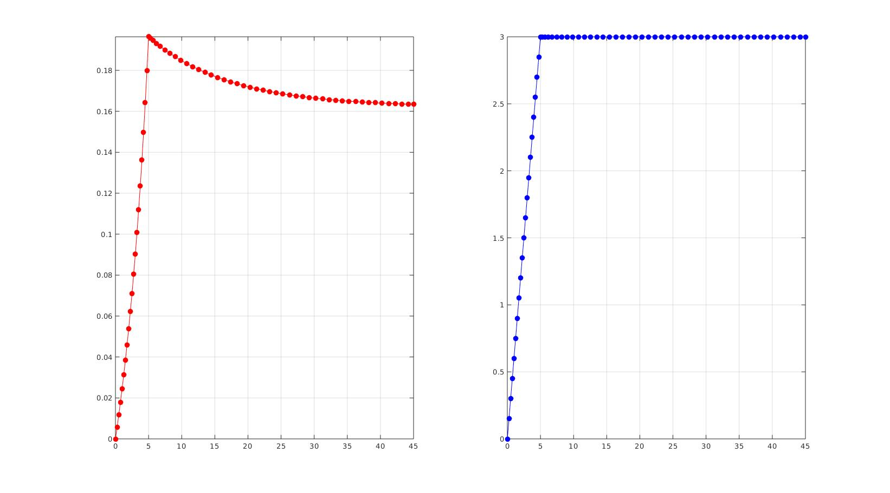
CREATING MESHED BOX
%Create box 1 boxDim=[sampleWidth sampleThickness sampleHeight]; %Dimensions boxEl=[numElementsWidth numElementsThickness numElementsHeight]; %Number of elements [box1]=hexMeshBox(boxDim,boxEl); E=box1.E; V=box1.V; Fb=box1.Fb; faceBoundaryMarker=box1.faceBoundaryMarker; X=V(:,1); Y=V(:,2); Z=V(:,3); VE=[mean(X(E),2) mean(Y(E),2) mean(Z(E),2)]; elementMaterialIndices=ones(size(E,1),1);
% Plotting boundary surfaces cFigure; hold on; title('Model surfaces','FontSize',fontSize); gpatch(Fb,V,faceBoundaryMarker,'k',0.5); colormap(gjet(6)); icolorbar; axisGeom(gca,fontSize); drawnow;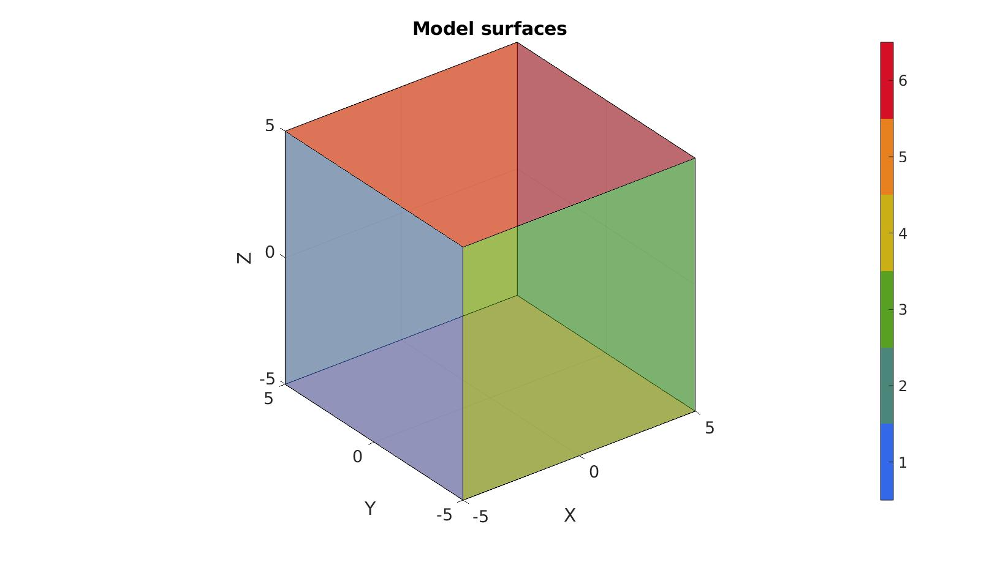
DEFINE BC's
%Define supported node sets logicFace=faceBoundaryMarker==1; Fr=Fb(logicFace,:); bcSupportList_X=unique(Fr(:)); logicFace=faceBoundaryMarker==3; Fr=Fb(logicFace,:); bcSupportList_Y=unique(Fr(:)); logicFace=faceBoundaryMarker==5; Fr=Fb(logicFace,:); bcSupportList_Z=unique(Fr(:)); %Prescribed displacement nodes logicPrescribe=faceBoundaryMarker==6; Fr=Fb(logicPrescribe,:); bcPrescribeList=unique(Fr(:));
Visualize BC's
cFigure; hold on; title('Complete model','FontSize',fontSize); gpatch(Fb,V,'kw','k',0.5); plotV(V(bcSupportList_X,:),'r.','MarkerSize',markerSize); plotV(V(bcSupportList_Y,:),'g.','MarkerSize',markerSize); plotV(V(bcSupportList_Z,:),'b.','MarkerSize',markerSize); plotV(V(bcPrescribeList,:),'k.','MarkerSize',markerSize); axisGeom(gca,fontSize); drawnow;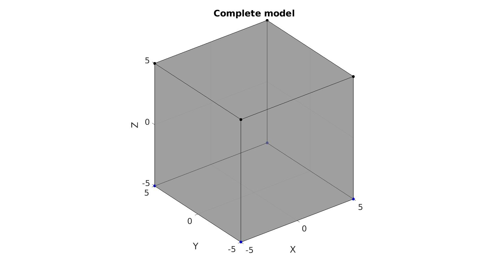
Defining the FEBio input structure
See also febioStructTemplate and febioStruct2xml and the FEBio user manual.
%Get a template with default settings [febio_spec]=febioStructTemplate; %febio_spec version febio_spec.ATTR.version='4.0'; %Module section febio_spec.Module.ATTR.type='solid'; %Control sections for each step febio_spec.Step.step{1}.Control=febio_spec.Control; %Copy from template febio_spec.Step.step{1}.ATTR.id=1; febio_spec.Step.step{1}.Control.analysis=analysisType; febio_spec.Step.step{1}.Control.time_steps=numTimeSteps1; febio_spec.Step.step{1}.Control.step_size=t_step1; febio_spec.Step.step{1}.Control.solver.max_refs=max_refs; febio_spec.Step.step{1}.Control.time_stepper.dtmin=dtmin1; febio_spec.Step.step{1}.Control.time_stepper.dtmax=dtmax1; febio_spec.Step.step{1}.Control.time_stepper.max_retries=max_retries; febio_spec.Step.step{1}.Control.time_stepper.opt_iter=opt_iter; febio_spec.Step.step{2}.Control=febio_spec.Control; %Copy from template febio_spec.Step.step{2}.ATTR.id=2; febio_spec.Step.step{2}.Control.analysis=analysisType; febio_spec.Step.step{2}.Control.time_steps=numTimeSteps2; febio_spec.Step.step{2}.Control.step_size=t_step2; febio_spec.Step.step{2}.Control.solver.max_refs=max_refs; febio_spec.Step.step{2}.Control.time_stepper.dtmin=dtmin2; febio_spec.Step.step{2}.Control.time_stepper.dtmax=dtmax2; febio_spec.Step.step{2}.Control.time_stepper.max_retries=max_retries; febio_spec.Step.step{2}.Control.time_stepper.opt_iter=opt_iter; %Remove control field (part of template) since step specific control sections are used febio_spec=rmfield(febio_spec,'Control'); %Material section materialName1='Material1'; febio_spec.Material.material{1}.ATTR.name=materialName1; %Viscoelastic part febio_spec.Material.material{1}.ATTR.type='uncoupled viscoelastic'; febio_spec.Material.material{1}.ATTR.id=1; febio_spec.Material.material{1}.g1=g1_ini; febio_spec.Material.material{1}.t1=t1_ini; febio_spec.Material.material{1}.k=k_ini; febio_spec.Material.material{1}.density=d; %Elastic part febio_spec.Material.material{1}.elastic{1}.ATTR.type='Ogden'; febio_spec.Material.material{1}.elastic{1}.c1=c1_ini; febio_spec.Material.material{1}.elastic{1}.m1=m1_ini; febio_spec.Material.material{1}.elastic{1}.c2=c1_ini; febio_spec.Material.material{1}.elastic{1}.m2=-m1_ini; febio_spec.Material.material{1}.elastic{1}.density=d; % Mesh section % -> Nodes febio_spec.Mesh.Nodes{1}.ATTR.name='Object1'; %The node set name febio_spec.Mesh.Nodes{1}.node.ATTR.id=(1:size(V,1))'; %The node id's febio_spec.Mesh.Nodes{1}.node.VAL=V; %The nodel coordinates % -> Elements partName1='Part1'; febio_spec.Mesh.Elements{1}.ATTR.name=partName1; %Name of this part febio_spec.Mesh.Elements{1}.ATTR.type='hex8'; %Element type febio_spec.Mesh.Elements{1}.elem.ATTR.id=(1:1:size(E,1))'; %Element id's febio_spec.Mesh.Elements{1}.elem.VAL=E; %The element matrix % -> NodeSets nodeSetName1='bcSupportList_X'; nodeSetName2='bcSupportList_Y'; nodeSetName3='bcSupportList_Z'; nodeSetName4='bcPrescribeList'; febio_spec.Mesh.NodeSet{1}.ATTR.name=nodeSetName1; febio_spec.Mesh.NodeSet{1}.VAL=mrow(bcSupportList_X); febio_spec.Mesh.NodeSet{2}.ATTR.name=nodeSetName2; febio_spec.Mesh.NodeSet{2}.VAL=mrow(bcSupportList_Y); febio_spec.Mesh.NodeSet{3}.ATTR.name=nodeSetName3; febio_spec.Mesh.NodeSet{3}.VAL=mrow(bcSupportList_Z); febio_spec.Mesh.NodeSet{4}.ATTR.name=nodeSetName4; febio_spec.Mesh.NodeSet{4}.VAL=mrow(bcPrescribeList); %MeshDomains section febio_spec.MeshDomains.SolidDomain.ATTR.name=partName1; febio_spec.MeshDomains.SolidDomain.ATTR.mat=materialName1; %Boundary condition section % -> Fix boundary conditions febio_spec.Boundary.bc{1}.ATTR.name='zero_displacement_x'; febio_spec.Boundary.bc{1}.ATTR.type='zero displacement'; febio_spec.Boundary.bc{1}.ATTR.node_set=nodeSetName1; febio_spec.Boundary.bc{1}.x_dof=1; febio_spec.Boundary.bc{1}.y_dof=0; febio_spec.Boundary.bc{1}.z_dof=0; febio_spec.Boundary.bc{2}.ATTR.name='zero_displacement_y'; febio_spec.Boundary.bc{2}.ATTR.type='zero displacement'; febio_spec.Boundary.bc{2}.ATTR.node_set=nodeSetName2; febio_spec.Boundary.bc{2}.x_dof=0; febio_spec.Boundary.bc{2}.y_dof=1; febio_spec.Boundary.bc{2}.z_dof=0; febio_spec.Boundary.bc{3}.ATTR.name='zero_displacement_z'; febio_spec.Boundary.bc{3}.ATTR.type='zero displacement'; febio_spec.Boundary.bc{3}.ATTR.node_set=nodeSetName3; febio_spec.Boundary.bc{3}.x_dof=0; febio_spec.Boundary.bc{3}.y_dof=0; febio_spec.Boundary.bc{3}.z_dof=1; febio_spec.Boundary.bc{4}.ATTR.name='prescibed_displacement_z'; febio_spec.Boundary.bc{4}.ATTR.type='prescribed displacement'; febio_spec.Boundary.bc{4}.ATTR.node_set=nodeSetName4; febio_spec.Boundary.bc{4}.dof='z'; febio_spec.Boundary.bc{4}.value.ATTR.lc=1; febio_spec.Boundary.bc{4}.value.VAL=displacementMagnitude; febio_spec.Boundary.bc{4}.relative=0; %LoadData section % -> load_controller febio_spec.LoadData.load_controller{1}.ATTR.name='LC1'; febio_spec.LoadData.load_controller{1}.ATTR.id=1; febio_spec.LoadData.load_controller{1}.ATTR.type='loadcurve'; febio_spec.LoadData.load_controller{1}.interpolate='LINEAR'; febio_spec.LoadData.load_controller{1}.extend='CONSTANT'; febio_spec.LoadData.load_controller{1}.points.pt.VAL=loadCurveData; %Output section % -> log file febio_spec.Output.logfile.ATTR.file=febioLogFileName; febio_spec.Output.logfile.node_data{1}.ATTR.file=febioLogFileName_disp; febio_spec.Output.logfile.node_data{1}.ATTR.data='ux;uy;uz'; febio_spec.Output.logfile.node_data{1}.ATTR.delim=','; febio_spec.Output.logfile.node_data{2}.ATTR.file=febioLogFileName_force; febio_spec.Output.logfile.node_data{2}.ATTR.data='Rx;Ry;Rz'; febio_spec.Output.logfile.node_data{2}.ATTR.delim=','; febio_spec.Output.logfile.element_data{1}.ATTR.file=febioLogFileName_stress; febio_spec.Output.logfile.element_data{1}.ATTR.data='sz'; febio_spec.Output.logfile.element_data{1}.ATTR.delim=','; febio_spec.Output.logfile.element_data{2}.ATTR.file=febioLogFileName_stretch; febio_spec.Output.logfile.element_data{2}.ATTR.data='Uz'; febio_spec.Output.logfile.element_data{2}.ATTR.delim=','; % Plotfile section febio_spec.Output.plotfile.compression=0;
Quick viewing of the FEBio input file structure
The febView function can be used to view the xml structure in a MATLAB figure window.
febView(febio_spec); %Viewing the febio file
Exporting the FEBio input file
Exporting the febio_spec structure to an FEBio input file is done using the febioStruct2xml function.
febioStruct2xml(febio_spec,febioFebFileName); %Exporting to file and domNode %system(['gedit ',febioFebFileName,' &']);
Running the FEBio analysis
To run the analysis defined by the created FEBio input file the runMonitorFEBio function is used. The input for this function is a structure defining job settings e.g. the FEBio input file name. The optional output runFlag informs the user if the analysis was run succesfully.
febioAnalysis.run_filename=febioFebFileName; %The input file name febioAnalysis.run_logname=febioLogFileName; %The name for the log file febioAnalysis.disp_on=1; %Display information on the command window febioAnalysis.runMode=runMode; febioAnalysis.maxLogCheckTime=10; %Max log file checking time [runFlag]=runMonitorFEBio(febioAnalysis);%START FEBio NOW!!!!!!!!
%%%%%%%%%%%%%%%%%%%%%%%%%%%%%%%%%%%%%%%%%%%%%%%%%%%%%%%%%%%%%%%%%%%%%%%%%%%
--------> RUNNING/MONITORING FEBIO JOB <-------- 01-Sep-2023 11:38:44
FEBio path: /home/kevin/FEBioStudio/bin/febio4
# Attempt removal of existing log files 01-Sep-2023 11:38:44
* Removal succesful 01-Sep-2023 11:38:44
# Attempt removal of existing .xplt files 01-Sep-2023 11:38:44
* Removal succesful 01-Sep-2023 11:38:44
# Starting FEBio... 01-Sep-2023 11:38:44
Max. total analysis time is: Inf s
* Waiting for log file creation 01-Sep-2023 11:38:44
Max. wait time: 10 s
* Log file found. 01-Sep-2023 11:38:44
# Parsing log file... 01-Sep-2023 11:38:44
number of iterations : 3 01-Sep-2023 11:38:45
number of reformations : 3 01-Sep-2023 11:38:45
------- converged at time : 0.25 01-Sep-2023 11:38:45
number of iterations : 3 01-Sep-2023 11:38:45
number of reformations : 3 01-Sep-2023 11:38:45
------- converged at time : 0.5 01-Sep-2023 11:38:45
number of iterations : 3 01-Sep-2023 11:38:45
number of reformations : 3 01-Sep-2023 11:38:45
------- converged at time : 0.75 01-Sep-2023 11:38:45
number of iterations : 3 01-Sep-2023 11:38:45
number of reformations : 3 01-Sep-2023 11:38:45
------- converged at time : 1 01-Sep-2023 11:38:45
number of iterations : 3 01-Sep-2023 11:38:45
number of reformations : 3 01-Sep-2023 11:38:45
------- converged at time : 1.25 01-Sep-2023 11:38:45
number of iterations : 3 01-Sep-2023 11:38:45
number of reformations : 3 01-Sep-2023 11:38:45
------- converged at time : 1.5 01-Sep-2023 11:38:45
number of iterations : 3 01-Sep-2023 11:38:45
number of reformations : 3 01-Sep-2023 11:38:45
------- converged at time : 1.75 01-Sep-2023 11:38:45
number of iterations : 3 01-Sep-2023 11:38:45
number of reformations : 3 01-Sep-2023 11:38:45
------- converged at time : 2 01-Sep-2023 11:38:45
number of iterations : 3 01-Sep-2023 11:38:45
number of reformations : 3 01-Sep-2023 11:38:45
------- converged at time : 2.25 01-Sep-2023 11:38:45
number of iterations : 3 01-Sep-2023 11:38:45
number of reformations : 3 01-Sep-2023 11:38:45
------- converged at time : 2.5 01-Sep-2023 11:38:45
number of iterations : 3 01-Sep-2023 11:38:45
number of reformations : 3 01-Sep-2023 11:38:45
------- converged at time : 2.75 01-Sep-2023 11:38:45
number of iterations : 3 01-Sep-2023 11:38:45
number of reformations : 3 01-Sep-2023 11:38:45
------- converged at time : 3 01-Sep-2023 11:38:45
number of iterations : 3 01-Sep-2023 11:38:45
number of reformations : 3 01-Sep-2023 11:38:45
------- converged at time : 3.25 01-Sep-2023 11:38:45
number of iterations : 3 01-Sep-2023 11:38:45
number of reformations : 3 01-Sep-2023 11:38:45
------- converged at time : 3.5 01-Sep-2023 11:38:45
number of iterations : 3 01-Sep-2023 11:38:45
number of reformations : 3 01-Sep-2023 11:38:45
------- converged at time : 3.75 01-Sep-2023 11:38:45
number of iterations : 3 01-Sep-2023 11:38:45
number of reformations : 3 01-Sep-2023 11:38:45
------- converged at time : 4 01-Sep-2023 11:38:45
number of iterations : 3 01-Sep-2023 11:38:45
number of reformations : 3 01-Sep-2023 11:38:45
------- converged at time : 4.25 01-Sep-2023 11:38:45
number of iterations : 3 01-Sep-2023 11:38:45
number of reformations : 3 01-Sep-2023 11:38:45
------- converged at time : 4.5 01-Sep-2023 11:38:45
number of iterations : 3 01-Sep-2023 11:38:45
number of reformations : 3 01-Sep-2023 11:38:45
------- converged at time : 4.75 01-Sep-2023 11:38:45
number of iterations : 3 01-Sep-2023 11:38:45
number of reformations : 3 01-Sep-2023 11:38:45
------- converged at time : 5 01-Sep-2023 11:38:45
number of iterations : 2 01-Sep-2023 11:38:45
number of reformations : 2 01-Sep-2023 11:38:45
------- converged at time : 5.25 01-Sep-2023 11:38:45
number of iterations : 2 01-Sep-2023 11:38:45
number of reformations : 2 01-Sep-2023 11:38:45
------- converged at time : 5.65 01-Sep-2023 11:38:45
number of iterations : 2 01-Sep-2023 11:38:45
number of reformations : 2 01-Sep-2023 11:38:45
------- converged at time : 6.17 01-Sep-2023 11:38:45
number of iterations : 2 01-Sep-2023 11:38:45
number of reformations : 2 01-Sep-2023 11:38:45
------- converged at time : 6.786 01-Sep-2023 11:38:45
number of iterations : 2 01-Sep-2023 11:38:45
number of reformations : 2 01-Sep-2023 11:38:45
------- converged at time : 7.4788 01-Sep-2023 11:38:45
number of iterations : 2 01-Sep-2023 11:38:45
number of reformations : 2 01-Sep-2023 11:38:45
------- converged at time : 8.23304 01-Sep-2023 11:38:45
number of iterations : 2 01-Sep-2023 11:38:45
number of reformations : 2 01-Sep-2023 11:38:45
------- converged at time : 9.03643 01-Sep-2023 11:38:45
number of iterations : 2 01-Sep-2023 11:38:45
number of reformations : 2 01-Sep-2023 11:38:45
------- converged at time : 9.87915 01-Sep-2023 11:38:45
number of iterations : 2 01-Sep-2023 11:38:45
number of reformations : 2 01-Sep-2023 11:38:45
------- converged at time : 10.7533 01-Sep-2023 11:38:45
number of iterations : 2 01-Sep-2023 11:38:45
number of reformations : 2 01-Sep-2023 11:38:45
------- converged at time : 11.6527 01-Sep-2023 11:38:45
number of iterations : 2 01-Sep-2023 11:38:45
number of reformations : 2 01-Sep-2023 11:38:45
------- converged at time : 12.5721 01-Sep-2023 11:38:45
number of iterations : 2 01-Sep-2023 11:38:45
number of reformations : 2 01-Sep-2023 11:38:45
------- converged at time : 13.5077 01-Sep-2023 11:38:45
number of iterations : 2 01-Sep-2023 11:38:45
number of reformations : 2 01-Sep-2023 11:38:45
------- converged at time : 14.4562 01-Sep-2023 11:38:45
number of iterations : 2 01-Sep-2023 11:38:45
number of reformations : 2 01-Sep-2023 11:38:45
------- converged at time : 15.4149 01-Sep-2023 11:38:45
number of iterations : 2 01-Sep-2023 11:38:45
number of reformations : 2 01-Sep-2023 11:38:45
------- converged at time : 16.3819 01-Sep-2023 11:38:45
number of iterations : 2 01-Sep-2023 11:38:45
number of reformations : 2 01-Sep-2023 11:38:45
------- converged at time : 17.3556 01-Sep-2023 11:38:45
number of iterations : 2 01-Sep-2023 11:38:45
number of reformations : 2 01-Sep-2023 11:38:45
------- converged at time : 18.3344 01-Sep-2023 11:38:45
number of iterations : 2 01-Sep-2023 11:38:45
number of reformations : 2 01-Sep-2023 11:38:45
------- converged at time : 19.3176 01-Sep-2023 11:38:45
number of iterations : 2 01-Sep-2023 11:38:45
number of reformations : 2 01-Sep-2023 11:38:45
------- converged at time : 20.304 01-Sep-2023 11:38:45
number of iterations : 2 01-Sep-2023 11:38:45
number of reformations : 2 01-Sep-2023 11:38:45
------- converged at time : 21.2932 01-Sep-2023 11:38:45
number of iterations : 2 01-Sep-2023 11:38:45
number of reformations : 2 01-Sep-2023 11:38:45
------- converged at time : 22.2846 01-Sep-2023 11:38:45
number of iterations : 2 01-Sep-2023 11:38:45
number of reformations : 2 01-Sep-2023 11:38:45
------- converged at time : 23.2777 01-Sep-2023 11:38:45
number of iterations : 2 01-Sep-2023 11:38:45
number of reformations : 2 01-Sep-2023 11:38:45
------- converged at time : 24.2721 01-Sep-2023 11:38:45
number of iterations : 2 01-Sep-2023 11:38:45
number of reformations : 2 01-Sep-2023 11:38:45
------- converged at time : 25.2677 01-Sep-2023 11:38:45
number of iterations : 2 01-Sep-2023 11:38:45
number of reformations : 2 01-Sep-2023 11:38:45
------- converged at time : 26.2642 01-Sep-2023 11:38:45
number of iterations : 2 01-Sep-2023 11:38:45
number of reformations : 2 01-Sep-2023 11:38:45
------- converged at time : 27.2613 01-Sep-2023 11:38:45
number of iterations : 1 01-Sep-2023 11:38:45
number of reformations : 1 01-Sep-2023 11:38:45
------- converged at time : 28.2591 01-Sep-2023 11:38:45
number of iterations : 1 01-Sep-2023 11:38:45
number of reformations : 1 01-Sep-2023 11:38:45
------- converged at time : 29.2573 01-Sep-2023 11:38:45
number of iterations : 1 01-Sep-2023 11:38:45
number of reformations : 1 01-Sep-2023 11:38:45
------- converged at time : 30.2558 01-Sep-2023 11:38:45
number of iterations : 1 01-Sep-2023 11:38:45
number of reformations : 1 01-Sep-2023 11:38:45
------- converged at time : 31.2546 01-Sep-2023 11:38:45
number of iterations : 1 01-Sep-2023 11:38:45
number of reformations : 1 01-Sep-2023 11:38:45
------- converged at time : 32.2537 01-Sep-2023 11:38:45
number of iterations : 1 01-Sep-2023 11:38:45
number of reformations : 1 01-Sep-2023 11:38:45
------- converged at time : 33.253 01-Sep-2023 11:38:45
number of iterations : 1 01-Sep-2023 11:38:45
number of reformations : 1 01-Sep-2023 11:38:45
------- converged at time : 34.2524 01-Sep-2023 11:38:45
number of iterations : 1 01-Sep-2023 11:38:45
number of reformations : 1 01-Sep-2023 11:38:45
------- converged at time : 35.2519 01-Sep-2023 11:38:45
number of iterations : 1 01-Sep-2023 11:38:45
number of reformations : 1 01-Sep-2023 11:38:45
------- converged at time : 36.2515 01-Sep-2023 11:38:45
number of iterations : 1 01-Sep-2023 11:38:45
number of reformations : 1 01-Sep-2023 11:38:45
------- converged at time : 37.2512 01-Sep-2023 11:38:45
number of iterations : 1 01-Sep-2023 11:38:45
number of reformations : 1 01-Sep-2023 11:38:45
------- converged at time : 38.251 01-Sep-2023 11:38:45
number of iterations : 1 01-Sep-2023 11:38:45
number of reformations : 1 01-Sep-2023 11:38:45
------- converged at time : 39.2508 01-Sep-2023 11:38:45
number of iterations : 1 01-Sep-2023 11:38:45
number of reformations : 1 01-Sep-2023 11:38:45
------- converged at time : 40.2506 01-Sep-2023 11:38:45
number of iterations : 1 01-Sep-2023 11:38:45
number of reformations : 1 01-Sep-2023 11:38:45
------- converged at time : 41.2505 01-Sep-2023 11:38:45
number of iterations : 1 01-Sep-2023 11:38:45
number of reformations : 1 01-Sep-2023 11:38:45
------- converged at time : 42.2504 01-Sep-2023 11:38:45
number of iterations : 1 01-Sep-2023 11:38:45
number of reformations : 1 01-Sep-2023 11:38:45
------- converged at time : 43.2503 01-Sep-2023 11:38:45
number of iterations : 1 01-Sep-2023 11:38:45
number of reformations : 1 01-Sep-2023 11:38:45
------- converged at time : 44.2503 01-Sep-2023 11:38:45
number of iterations : 1 01-Sep-2023 11:38:45
number of reformations : 1 01-Sep-2023 11:38:45
------- converged at time : 45 01-Sep-2023 11:38:45
Elapsed time : 0:00:00 01-Sep-2023 11:38:45
N O R M A L T E R M I N A T I O N
# Done 01-Sep-2023 11:38:45
%%%%%%%%%%%%%%%%%%%%%%%%%%%%%%%%%%%%%%%%%%%%%%%%%%%%%%%%%%%%%%%%%%%%%%%%%%%
Import FEBio results
if runFlag==1 %i.e. a succesful run
% Importing nodal displacements from a log file dataStruct=importFEBio_logfile(fullfile(savePath,febioLogFileName_disp),0,1); %Access data N_disp_mat=dataStruct.data; %Displacement timeVec=dataStruct.time; %Time %Create deformed coordinate set V_DEF=N_disp_mat+repmat(V,[1 1 size(N_disp_mat,3)]);
Plotting the simulated results using anim8 to visualize and animate deformations
DN_magnitude=sqrt(sum(N_disp_mat(:,:,end).^2,2)); %Current displacement magnitude % Create basic view and store graphics handle to initiate animation hf=cFigure; %Open figure gtitle([febioFebFileNamePart,': Press play to animate']); title('Displacement magnitude [mm]','Interpreter','Latex') hp=gpatch(Fb,V_DEF(:,:,end),DN_magnitude,'k',1,2); %Add graphics object to animate hp.Marker='.'; hp.MarkerSize=markerSize2; hp.FaceColor='interp'; gpatch(Fb,V,0.5*ones(1,3),'none',0.25); %A static graphics object axisGeom(gca,fontSize); colormap(cMap); colorbar; caxis([0 max(DN_magnitude)]); caxis manual; axis(axisLim(V_DEF)); %Set axis limits statically view(140,30); camlight headlight; % Set up animation features animStruct.Time=timeVec; %The time vector for qt=1:1:size(N_disp_mat,3) %Loop over time increments DN_magnitude=sqrt(sum(N_disp_mat(:,:,qt).^2,2)); %Current displacement magnitude %Set entries in animation structure animStruct.Handles{qt}=[hp hp]; %Handles of objects to animate animStruct.Props{qt}={'Vertices','CData'}; %Properties of objects to animate animStruct.Set{qt}={V_DEF(:,:,qt),DN_magnitude}; %Property values for to set in order to animate end anim8(hf,animStruct); %Initiate animation feature drawnow;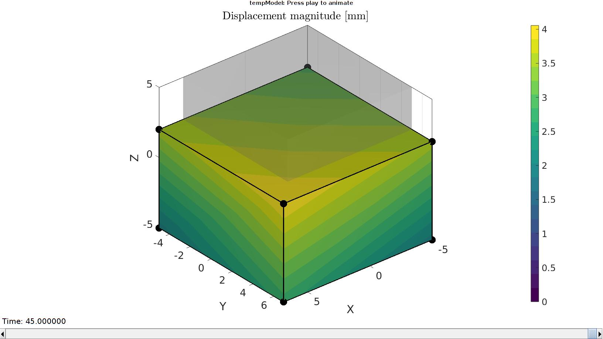
Importing element stress from a log file
dataStruct=importFEBio_logfile(fullfile(savePath,febioLogFileName_stress),0,1);
%Access data
E_stress_mat=dataStruct.data;
Importing element stretch from a log file
dataStruct=importFEBio_logfile(fullfile(savePath,febioLogFileName_stretch),0,1);
%Access data
E_stretch_mat=dataStruct.data;
Plotting the simulated results using anim8 to visualize and animate deformations
[CV]=faceToVertexMeasure(E,V,E_stress_mat(:,:,end));
% Create basic view and store graphics handle to initiate animation
hf=cFigure; %Open figure /usr/local/MATLAB/R2020a/bin/glnxa64/jcef_helper: symbol lookup error: /lib/x86_64-linux-gnu/libpango-1.0.so.0: undefined symbol: g_ptr_array_copy
gtitle([febioFebFileNamePart,': Press play to animate']);
title('$\sigma_{zz}$ [MPa]','Interpreter','Latex')
hp=gpatch(Fb,V_DEF(:,:,end),CV,'k',1,2); %Add graphics object to animate
hp.Marker='.';
hp.MarkerSize=markerSize2;
hp.FaceColor='interp';
gpatch(Fb,V,0.5*ones(1,3),'none',0.25); %A static graphics object
axisGeom(gca,fontSize);
colormap(cMap); colorbar;
caxis([min(E_stress_mat(:)) max(E_stress_mat(:))]);
axis(axisLim(V_DEF)); %Set axis limits statically
view(140,30);
camlight headlight;
% Set up animation features
animStruct.Time=timeVec; %The time vector
for qt=1:1:size(N_disp_mat,3) %Loop over time increments
[CV]=faceToVertexMeasure(E,V,E_stress_mat(:,:,qt));
%Set entries in animation structure
animStruct.Handles{qt}=[hp hp]; %Handles of objects to animate
animStruct.Props{qt}={'Vertices','CData'}; %Properties of objects to animate
animStruct.Set{qt}={V_DEF(:,:,qt),CV}; %Property values for to set in order to animate
end
anim8(hf,animStruct); %Initiate animation feature
drawnow;
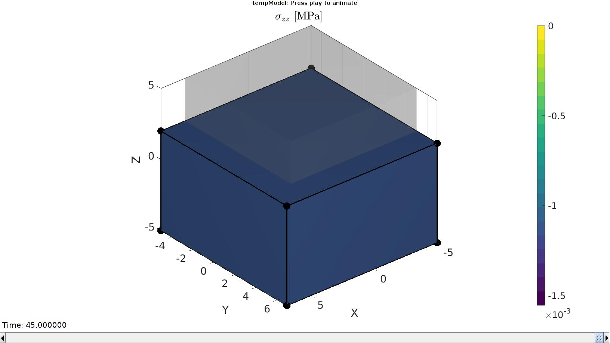 Importing element stress from a log file
dataStruct=importFEBio_logfile(fullfile(savePath,febioLogFileName_force),0,1);
%Access data
N_force_mat=dataStruct.data;
time_sim=timeVec;
force_sim=-squeeze(sum(N_force_mat(:,3,:),1));
Visualize stretch-stress curve
stretch_sim=squeeze(mean(E_stretch_mat,1)); % Stretch U_z stress_cauchy_sim=squeeze(mean(E_stress_mat,1)); %Cauchy stress sigma_z
Visualize stress-stretch curve
cFigure; hold on; title('Force curve optimisation','FontSize',fontSize); xlabel('t [s]','FontSize',fontSize); ylabel('$F_z$ [N]','FontSize',fontSize,'Interpreter','Latex'); zlabel('Z','FontSize',fontSize); hold on; Hn(1)=plot(time_sim,force_sim,'r.-','lineWidth',lineWidth2,'markerSize',markerSize2); Hn(2)=plot(time_exp,force_exp,'k-','lineWidth',lineWidth); legend(Hn,{'Simulation','Experiment'},'Location','northeastoutside'); view(2); axis tight; grid on; axis square; axis manual; set(gca,'FontSize',fontSize); drawnow;
end
Create structures for optimization
% Material structure mat_struct.id=1; %Material id mat_struct.par_names={'g1','t1'}; %Parameter names mat_struct.par_values={g1_ini t1_ini}; %Parameter values febioAnalysis.disp_on=0; febioAnalysis.disp_log_on=0; %What should be known to the objective function: objectiveStruct.h=Hn(1); objectiveStruct.time_exp=time_exp; objectiveStruct.force_exp=force_exp; objectiveStruct.febioAnalysis=febioAnalysis; objectiveStruct.febio_spec=febio_spec; objectiveStruct.febioFebFileName=febioFebFileName; objectiveStruct.mat_struct=mat_struct; objectiveStruct.parNormFactors=P; %This will normalize the parameters to ones(size(P)) objectiveStruct.Pb_struct.xx_c=P; %Parameter constraining centre objectiveStruct.Pb_struct.xxlim=[P(1)/1000 100;... P(2)/1000 100]; %Parameter bounds %Optimisation settings maxNumberIterations=100; %Maximum number of optimization iterations maxNumberFunctionEvaluations=maxNumberIterations*10; %Maximum number of function evaluations, N.B. multiple evaluations are used per iteration functionTolerance=1e-6; %Tolerance on objective function value parameterTolerance=1e-6; %Tolerance on parameter variation displayTypeIterations='iter'; objectiveStruct.method=2; %File names of output files output_names.force=fullfile(savePath,febioLogFileName_force); objectiveStruct.run_output_names=output_names;
start optimization
Pn=P./objectiveStruct.parNormFactors; switch objectiveStruct.method case 1 %fminsearch and Nelder-Mead OPT_options=optimset('fminsearch'); % 'Nelder-Mead simplex direct search' OPT_options = optimset(OPT_options,'MaxFunEvals',maxNumberFunctionEvaluations,... 'MaxIter',maxNumberIterations,... 'TolFun',functionTolerance,... 'TolX',parameterTolerance,... 'Display',displayTypeIterations,... 'FinDiffRelStep',1e-2,... 'DiffMaxChange',0.5); [Pn_opt,OPT_out.fval,OPT_out.exitflag,OPT_out.output]= fminsearch(@(Pn) objectiveFunctionIFEA(Pn,objectiveStruct),Pn,OPT_options); case 2 %lsqnonlin and Levenberg-Marquardt OPT_options = optimoptions(@lsqnonlin,'Algorithm','levenberg-marquardt'); OPT_options = optimoptions(OPT_options,'MaxFunEvals',maxNumberFunctionEvaluations,... 'MaxIter',maxNumberIterations,... 'TolFun',functionTolerance,... 'TolX',parameterTolerance,... 'Display',displayTypeIterations,... 'FinDiffRelStep',1e-2,... 'DiffMaxChange',0.5); [Pn_opt,OPT_out.resnorm,OPT_out.residual]= lsqnonlin(@(Pn) objectiveFunctionIFEA(Pn,objectiveStruct),Pn,[],[],OPT_options); end
[Fopt,OPT_stats_out]=objectiveFunctionIFEA(Pn_opt,objectiveStruct);
Unnormalize and constrain parameters
P_opt=Pn_opt.*objectiveStruct.parNormFactors; %Scale back, undo normalization %Constraining parameters for q=1:1:numel(P) [P(q)]=boxconstrain(P(q),objectiveStruct.Pb_struct.xxlim(q,1),objectiveStruct.Pb_struct.xxlim(q,2),objectiveStruct.Pb_struct.xx_c(q)); end disp_text=sprintf('%6.16e,',P_opt); disp_text=disp_text(1:end-1); disp(['P_opt=',disp_text]);
P_opt=2.2528813874812478e-01,1.2008168277296797e+01
cFigure; hold on; title('Force curve optimisation','FontSize',fontSize); xlabel('t [s]','FontSize',fontSize); ylabel('$F_z$ [N]','FontSize',fontSize,'Interpreter','Latex'); zlabel('Z','FontSize',fontSize); hold on; Hn(1)=plot(OPT_stats_out.time_sim,OPT_stats_out.force_sim,'r.-','lineWidth',lineWidth2,'markerSize',markerSize2); Hn(2)=plot(time_exp,force_exp,'k-','lineWidth',lineWidth); legend(Hn,{'Simulation','Experiment'},'Location','northeastoutside'); view(2); axis tight; grid on; axis square; axis manual; set(gca,'FontSize',fontSize); drawnow;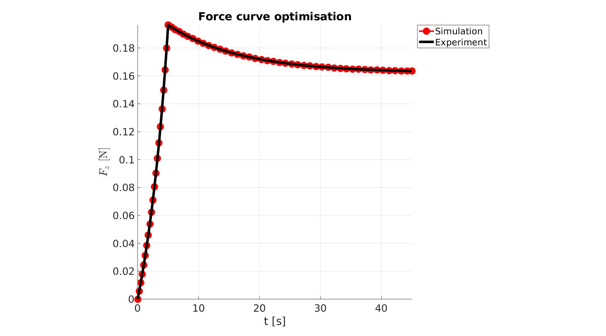
function [Fopt,OPT_stats_out]=objectiveFunctionIFEA(Pn,objectiveStruct)
febioFebFileName=objectiveStruct.febioFebFileName; febio_spec=objectiveStruct.febio_spec;
Unnormalize and constrain parameters
P=Pn.*objectiveStruct.parNormFactors; %Scale back, undo normalization P_in=P; %Proposed P %Constraining parameters for q=1:1:numel(P) [P(q)]=boxconstrain(P(q),objectiveStruct.Pb_struct.xxlim(q,1),objectiveStruct.Pb_struct.xxlim(q,2),objectiveStruct.Pb_struct.xx_c(q)); end
Setting material parameters
%Acces material parameters mat_struct=objectiveStruct.mat_struct; mat_struct.par_values={P(1) P(2)}; disp('SETTING MATERIAL PARAMETERS...'); disp(['Proposed (norm.): ',sprintf(repmat('%6.16e ',[1,numel(Pn)]),Pn)]); disp(['Proposed : ',sprintf(repmat('%6.16e ',[1,numel(P_in)]),P_in)]); disp(['Set (constr.) : ',sprintf(repmat('%6.16e ',[1,numel(P)]),P)]); %Assign material parameters matId=mat_struct.id; for q=1:1:numel(mat_struct.par_names) parNameNow=mat_struct.par_names{q}; parValuesNow=mat_struct.par_values{q}; febio_spec.Material.material{matId}.(parNameNow)=mat2strIntDouble(parValuesNow); end febioStruct2xml(febio_spec,febioFebFileName); %Exporting to file and domNode disp('Done')
SETTING MATERIAL PARAMETERS... Proposed (norm.): 1.0000000000000000e+00 1.0000000000000000e+00 Proposed : 5.0000000000000000e-01 6.0000000000000000e+00 Set (constr.) : 5.0000000000000000e-01 6.0000000000000000e+00 Done
SETTING MATERIAL PARAMETERS... Proposed (norm.): 1.0100000000000000e+00 1.0000000000000000e+00 Proposed : 5.0500000000000000e-01 6.0000000000000000e+00 Set (constr.) : 5.0499999999579137e-01 6.0000000000000000e+00 Done
SETTING MATERIAL PARAMETERS... Proposed (norm.): 1.0000000000000000e+00 1.0100000000000000e+00 Proposed : 5.0000000000000000e-01 6.0600000000000005e+00 Set (constr.) : 5.0000000000000000e-01 6.0599999918515186e+00 Done
SETTING MATERIAL PARAMETERS... Proposed (norm.): 6.9607253819226256e-01 1.0615588742679349e+00 Proposed : 3.4803626909613128e-01 6.3693532456076092e+00 Set (constr.) : 3.5255738995047059e-01 6.3693513447651906e+00 Done
SETTING MATERIAL PARAMETERS... Proposed (norm.): 7.0607253819226257e-01 1.0615588742679349e+00 Proposed : 3.5303626909613128e-01 6.3693532456076092e+00 Set (constr.) : 3.5713510575702756e-01 6.3693513447651906e+00 Done
SETTING MATERIAL PARAMETERS... Proposed (norm.): 6.9607253819226256e-01 1.0721744630106143e+00 Proposed : 3.4803626909613128e-01 6.4330467780636855e+00 Set (constr.) : 3.5255738995047059e-01 6.4330437145220545e+00 Done
SETTING MATERIAL PARAMETERS... Proposed (norm.): 4.8932036498949139e-01 1.4707271869607437e+00 Proposed : 2.4466018249474569e-01 8.8243631217644616e+00 Set (constr.) : 2.6479917960819727e-01 8.8235134956874308e+00 Done
SETTING MATERIAL PARAMETERS... Proposed (norm.): 4.9932036498949139e-01 1.4707271869607437e+00 Proposed : 2.4966018249474570e-01 8.8243631217644616e+00 Set (constr.) : 2.6870887250333753e-01 8.8235134956874308e+00 Done
SETTING MATERIAL PARAMETERS... Proposed (norm.): 4.8932036498949139e-01 1.4854344588303512e+00 Proposed : 2.4466018249474569e-01 8.9126067529821071e+00 Set (constr.) : 2.6479917960819727e-01 8.9116749977417626e+00 Done
SETTING MATERIAL PARAMETERS... Proposed (norm.): 4.4710642238077963e-01 1.9117729485670072e+00 Proposed : 2.2355321119038982e-01 1.1470637691402043e+01 Set (constr.) : 2.4870193673443164e-01 1.1464469626755392e+01 Done
SETTING MATERIAL PARAMETERS... Proposed (norm.): 4.5710642238077964e-01 1.9117729485670072e+00 Proposed : 2.2855321119038982e-01 1.1470637691402043e+01 Set (constr.) : 2.5245516860402145e-01 1.1464469626755392e+01 Done
SETTING MATERIAL PARAMETERS... Proposed (norm.): 4.4710642238077963e-01 1.9308906780526773e+00 Proposed : 2.2355321119038982e-01 1.1585344068316065e+01 Set (constr.) : 2.4870193673443164e-01 1.1578780198571351e+01 Done
SETTING MATERIAL PARAMETERS... Proposed (norm.): 4.5052342606079226e-01 2.0002499265835438e+00 Proposed : 2.2526171303039613e-01 1.2001499559501262e+01 Set (constr.) : 2.4998019633148721e-01 1.1993358239187607e+01 Done
SETTING MATERIAL PARAMETERS... Proposed (norm.): 4.6052342606079227e-01 2.0002499265835438e+00 Proposed : 2.3026171303039614e-01 1.2001499559501262e+01 Set (constr.) : 2.5374623776873040e-01 1.1993358239187607e+01 Done
SETTING MATERIAL PARAMETERS... Proposed (norm.): 4.5052342606079226e-01 2.0202524258493795e+00 Proposed : 2.2526171303039613e-01 1.2121514555096276e+01 Set (constr.) : 2.4998019633148721e-01 1.2112875552394470e+01 Done
SETTING MATERIAL PARAMETERS... Proposed (norm.): 4.5057686158731325e-01 2.0013608744842006e+00 Proposed : 2.2528843079365662e-01 1.2008165246905204e+01 Set (constr.) : 2.5000022075070749e-01 1.1999996799035461e+01 Done
SETTING MATERIAL PARAMETERS... Proposed (norm.): 4.6057686158731326e-01 2.0013608744842006e+00 Proposed : 2.3028843079365663e-01 1.2008165246905204e+01 Set (constr.) : 2.5376646232582262e-01 1.1999996799035461e+01 Done
SETTING MATERIAL PARAMETERS... Proposed (norm.): 4.5057686158731325e-01 2.0213744832290428e+00 Proposed : 2.2528843079365662e-01 1.2128246899374258e+01 Set (constr.) : 2.5000022075070749e-01 1.2119579394503358e+01 Done
SETTING MATERIAL PARAMETERS... Proposed (norm.): 4.5057627749624957e-01 2.0013613795494662e+00 Proposed : 2.2528813874812478e-01 1.2008168277296797e+01 Set (constr.) : 2.5000000186273563e-01 1.1999999817080514e+01 Done
SETTING MATERIAL PARAMETERS... Proposed (norm.): 4.6057627749624958e-01 2.0013613795494662e+00 Proposed : 2.3028813874812479e-01 1.2008168277296797e+01 Set (constr.) : 2.5376624125022135e-01 1.1999999817080514e+01 Done
SETTING MATERIAL PARAMETERS... Proposed (norm.): 4.5057627749624957e-01 2.0213749933449607e+00 Proposed : 2.2528813874812478e-01 1.2128249960069764e+01 Set (constr.) : 2.5000000186273563e-01 1.2119582442226841e+01 Done
SETTING MATERIAL PARAMETERS... Proposed (norm.): 4.5057627749624957e-01 2.0013613795494662e+00 Proposed : 2.2528813874812478e-01 1.2008168277296797e+01 Set (constr.) : 2.5000000186273563e-01 1.1999999817080514e+01 Done
START FEBio
[runFlag]=runMonitorFEBio(objectiveStruct.febioAnalysis); %pause(0.1); time_exp=objectiveStruct.time_exp; force_exp=objectiveStruct.force_exp; if runFlag==1 % Importing element stress from a log file dataStruct=importFEBio_logfile(objectiveStruct.run_output_names.force,0,1); N_force_mat=dataStruct.data; force_sim=-squeeze(sum(N_force_mat(:,3,:),1)); time_sim=dataStruct.time; if ~isempty(objectiveStruct.h) objectiveStruct.h.XData=time_sim; objectiveStruct.h.YData=force_sim; drawnow; end %Interpolate experiment onto simulated points force_sim_exp = interp1(time_sim,force_sim,time_exp,'pchip'); %Derive Fopt forceDev=force_exp-force_sim_exp; switch objectiveStruct.method case 1 Fopt=sum((forceDev).^2); %Sum of squared differences case 2 Fopt=forceDev(:);%(stressDev).^2; %Squared differences end OPT_stats_out.force_sim=force_sim; OPT_stats_out.time_sim=time_sim; OPT_stats_out.stressDev=forceDev; OPT_stats_out.Fopt=Fopt; else %Output NaN switch objectiveStruct.method case 1 Fopt=NaN; case 2 Fopt=NaN(size(time_exp)); %Squared differences end OPT_stats_out=[]; end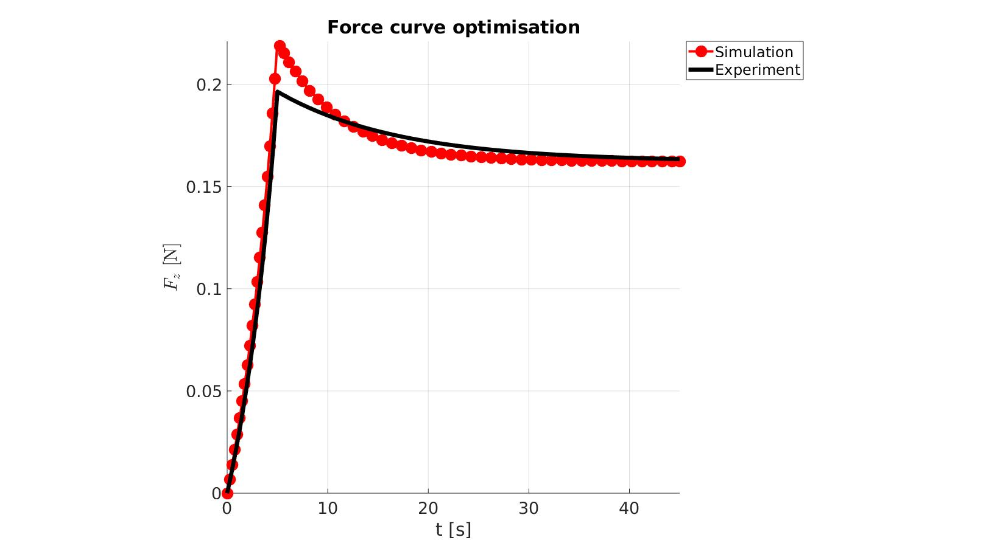 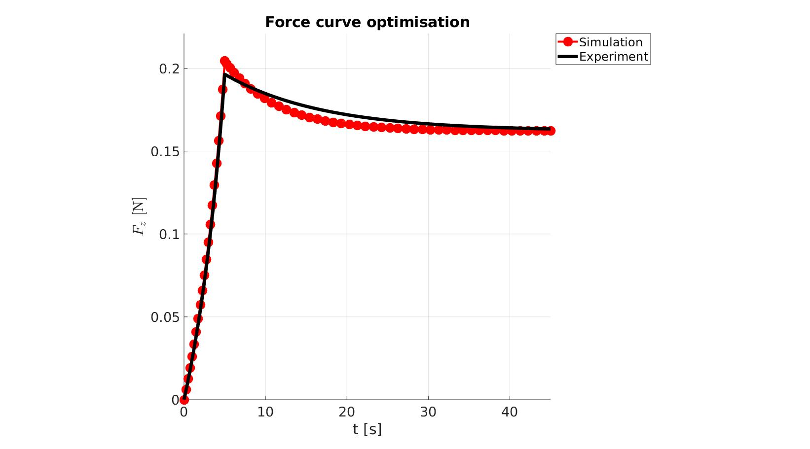 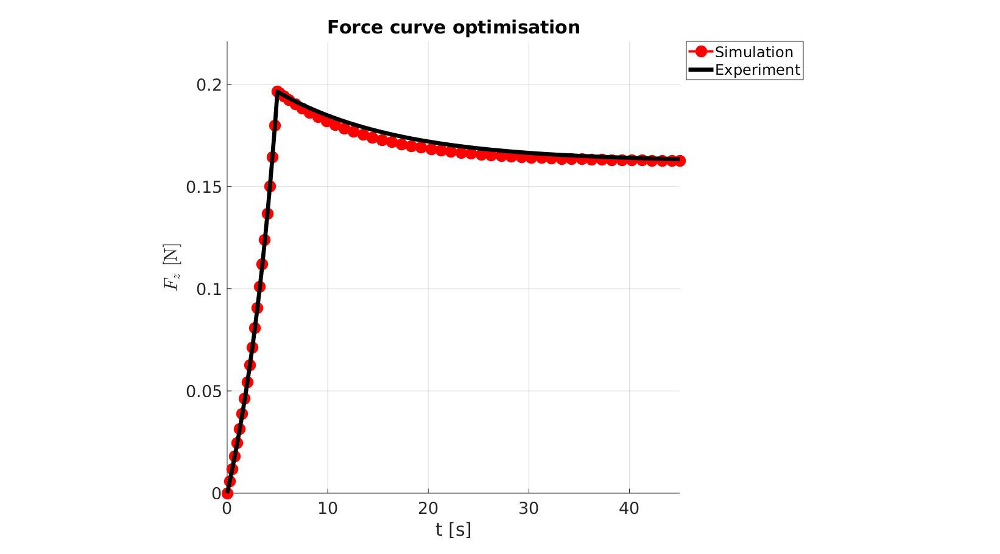
 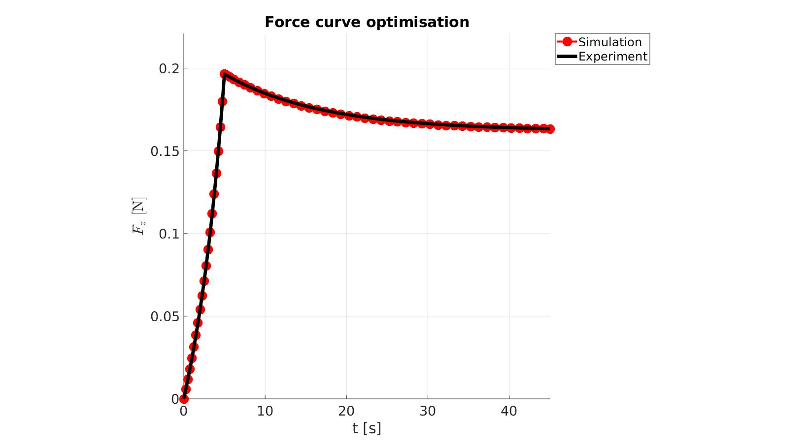
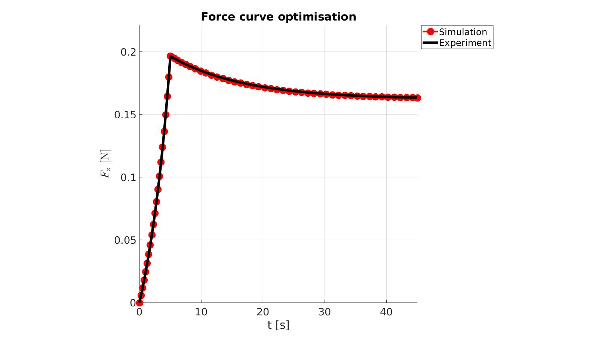 
 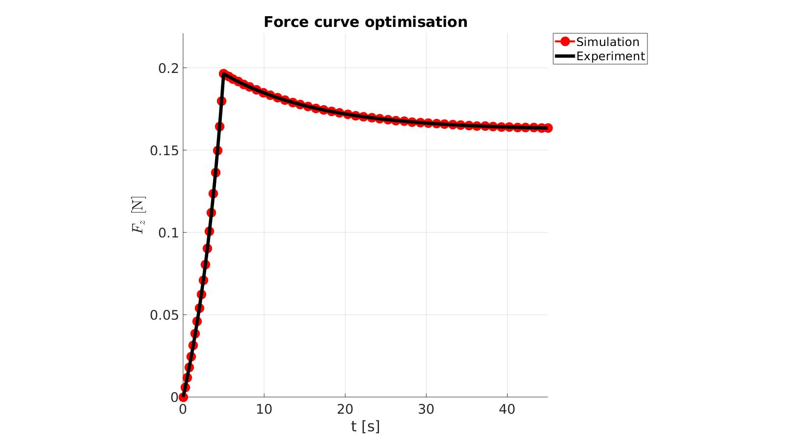
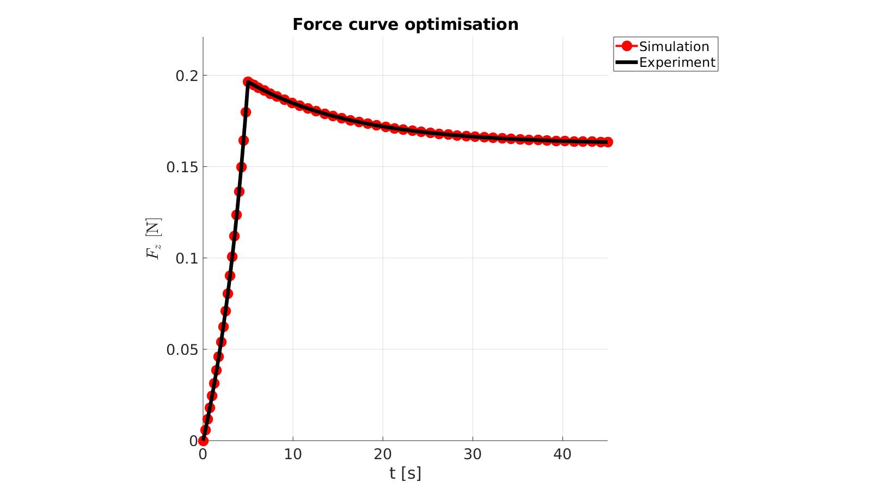 

end
First-order Norm of
Iteration Func-count Resnorm optimality Lambda step
0 3 0.00587745 0.0132 0.01
1 6 0.00118888 0.00276 0.001 0.310099
2 9 0.000291695 0.00122 0.0001 0.458438
3 12 1.37636e-05 0.000538 1e-05 0.443061
4 15 2.21641e-09 7.16e-06 1e-06 0.0885429
5 18 1.01341e-14 1.92e-08 1e-07 0.00111223
6 21 1.57421e-19 2.24e-12 1e-08 7.72174e-07
Local minimum found.
Optimization completed because the size of the gradient is less than
1e-4 times the value of the function tolerance.

GIBBON www.gibboncode.org
Kevin Mattheus Moerman, gibbon.toolbox@gmail.com
GIBBON footer text
License: https://github.com/gibbonCode/GIBBON/blob/master/LICENSE
GIBBON: The Geometry and Image-based Bioengineering add-On. A toolbox for image segmentation, image-based modeling, meshing, and finite element analysis.
Copyright (C) 2006-2023 Kevin Mattheus Moerman and the GIBBON contributors
This program is free software: you can redistribute it and/or modify it under the terms of the GNU General Public License as published by the Free Software Foundation, either version 3 of the License, or (at your option) any later version.
This program is distributed in the hope that it will be useful, but WITHOUT ANY WARRANTY; without even the implied warranty of MERCHANTABILITY or FITNESS FOR A PARTICULAR PURPOSE. See the GNU General Public License for more details.
You should have received a copy of the GNU General Public License along with this program. If not, see http://www.gnu.org/licenses/.